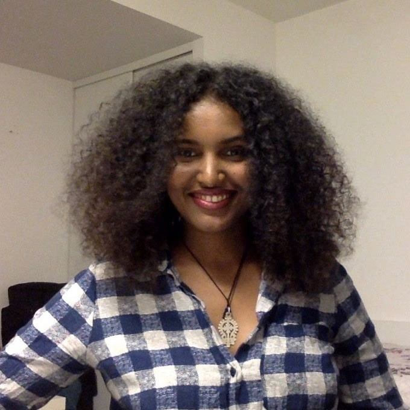
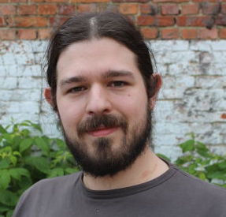

Organizing Committee

Genet Asefa Gesese
FIZ Karlsruhe, KIT, Germany

Mehwish Alam
Telecom Paris, Institut Polytechnique de Paris, France

Davide Buscaldi
Labortoire d'Informatique Paris Nord (LIPN), Paris, France

Michael Cochez
Vrije University of Amsterdam, the Netherlands

Francesco Osborne
Knowledge Media Institute (KMi), The Open University, UK

Diego Reforgiato Recupero
University of Cagliari, Cagliari, Italy
Program Committee
- Rima Türker, Karlsruhe Institute of Technology
- Danilo Dessi, GESIS
- Paul Groth, University of Amsterdam
- Thiviyan Thanapalasingam, University of Amsterdam, the Netherlands
- Peter Bloem, VU Amsterdam, the Netherlands
- Finn Arup Nielsen, Technical University of Denmark, Denmark
- Mayank Kejriwal, University of Southern California, US
- Femke Ongenae, Ghent University, Belgium
- Achim Rettinger, University of Trier, Germany
- Gerard de Melo, Hasso Plattner Institute, Germany
- Max Berrendorf, University of Ludwig-Maximilians (LMU), Germany
Volunteer to be the part of program committee of DL4KG by filling in this form.